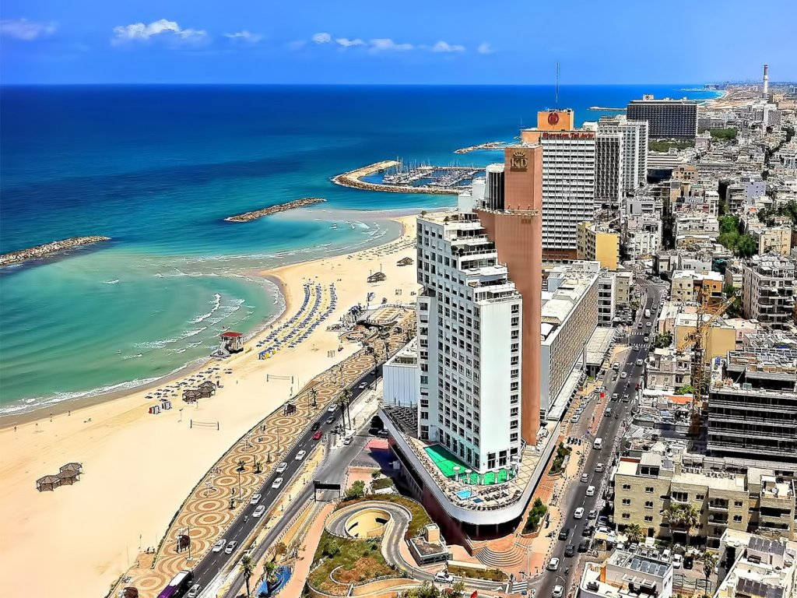
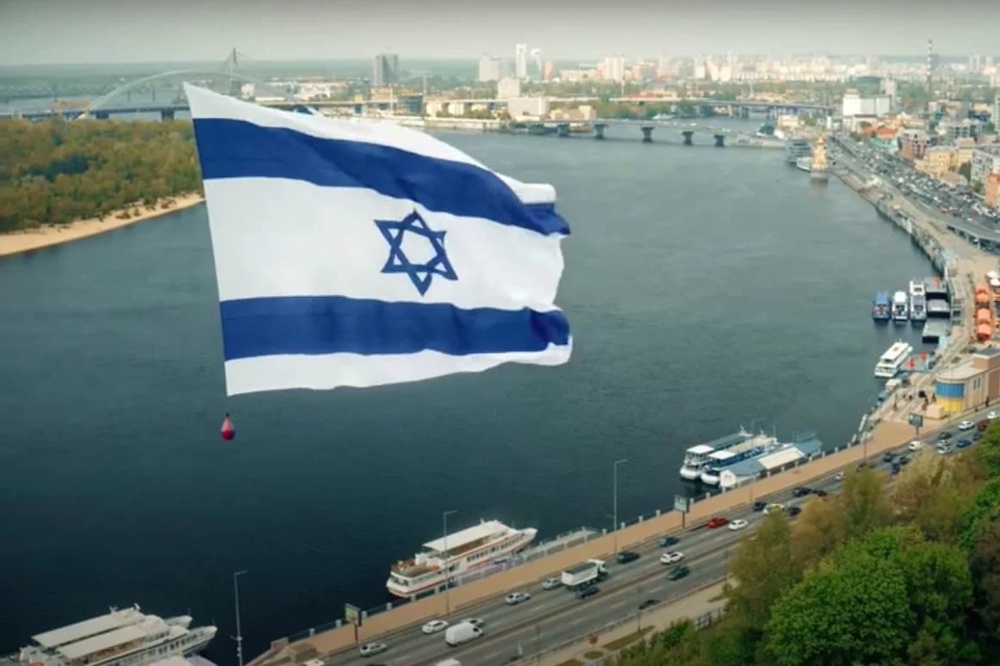

Golden Diadem Agency
Компания по подбору сотрудников для работы в Израиле.
Мы ведем поиск кандидатов и занимаемся трудоустройством в Израиле граждан Израиля так и граждан России, Украины, Белоруси, Польши, Сербии, Румынии и многих других стран СНГ, Азии и Европы.
Мы предлагаем легальное трудоустройство и получение легального статуса, бесплатные консультации с кандидатами, так же помощь на всех этапах.
Почему выбирают нас?
-Нет залогов и предоплат ;
-Предоставления жилья при необходимости;
-Встреча в аэропорту и трансфер до квартиры по прилету;
-Предоставим опытного адвоката для подачи ваших документов в эмиграционную службу.
Обратите внимание мы не делаем приглашение, не оплачиваем перелет.
Для детального уточнения обратитесь за помощью к нашим менеджерам по любому указанному мессенджеру.
 Вакансии
Работа облицовка фасадов зданий
Это прекрасная возможность получить отличную и одну из самых высокооплачиваемых профессий в Израиле без знания Иврита, средняя зарплата составляет от 10 000 до 16 000 шекелей в месяц (от 3000 $ до 5000 $ ).
Для того , что бы начать работать не требуется опыт, есть опция обучения ставка на обучении 35-40 ш час (10 - 12 $ час).
Среднее время обучение 1 - 2 месяца.
Далее вас переводят на сдельную оплату труда.
География объектов обширна: Тель - Авив, Ашдод, Хайфа, Рамат-Ган, Петах-Тиква, Ришон Ле Цион, и много других городов.
Зарплата увеличивается до 30 - 80 шекелей за квадратный метр.
График: с 7:00 - 17:00;
Выходные: пятница, суббота;
Зарплата: 17 - 20 числа (авансирование);
Подвозка бесплатная;
Облицовка фасадов осуществляется различными материалами:
-Алюкобондом;
-Алюминием;
-HPL панели;
-Файнбер панели;
-Керамика и др.
Работа на фабриках и заводах
Данные вакансии есть по всему Израилю.
Знания Иврита и опыт не требуются.
Сферы деятельности различные:
-Металлопрокат;
-Трубная промышленность;
-Изготовление медтехники;
-Продуктовое производство;
-Упаковка продукции;
-Фасовка продукции;
-Работа на конвейере.
График на производствах примерно одинаковый 10 - 12 часов смена, есть дневные и ночные смены.
Выходные : пятница, суббота или только суббота.
Средний оклад 35 шекелей час (11 $).
Субсидированные или бесплатные обеды.
Зарплата 10 го числа.
Работа фасовка на складе
Работа для мужчин, женщин и семейных пар, Центральные города.
Опыт и знание Иврита не требуются.
Средняя зарплата 35 - 40 шекелей час (10 - 12 $ ).
График 10 - 12 часов.
5 - 6 дней в неделю.
Выходной : суббота.
Повозка бесплатно, или оплата проезда на общественном транспорте.
Зарплата 10 го числа.
Работа на пекарне
Опыт и знание иврита не требуется.
Работа в городах Хайфа , Тель - Авив, Бат - Ям, Холод и др.
Зарплата 30 - 35 шекелей час (9 - 12$).
Выпечка, фасовка, упаковка продукции.
График 10 - 12 часов в первую смену иногда во вторую.
Оплата проезда на общественном транспорте или бесплатная подвозка.
Зарплата 10 го числа ( возможно авансирование).
Работа в кафе и ресторанах
Израиль славится обилием кафе и ресторанов. Если у вас есть знания английского, либо иврита, Вы без всяких сложностей сможете работать официантом или поваром(если есть опыт).
Нет английского и иврита ? Это не страшно, Вы так же найдете себя в ресторанном бизнесе.
Можно работать помощником повара, мыть посуду или заниматься уборкой залов.
Графики здесь разные от 12:00 и до 00:00.
Зарплата повара от 40 шекелей час и выше (13 $).
Помощник повара, мойка посуды, официант, уборка зало примерно одинаковые оклады: От 35 шекелей час до 40 шекелей час (11 - 14 $).
Оплата проезда на общественном транспорте.
Питание за счет заведения.
График выходных плавающий, посменный.
Зарплата 10 го числа (возможно авансирование).
Клининг (уборки)
Центральные города - уборки квартир: Требуются мужчины , женщины и семейные пары. Иврит не требуется.
Зарплата от 50 шекелей час (15$).
График 10 -12 часов.
Выходные : пятница, суббота или только суббота.
Бесплатная подвозка к работе и к дому.
Если нет возможности организовать подвозку - оплата проезда на общественном транспорте.
Зарплата раз в неделю.
При необходимости предоставляется комфортное проживание.
Строительство метро
В центральных городах Израиля активно строится метро.
Это долгосрочный объект в производстве которого всегда требуются сотрудники.
Опыт не требуется.
Иврит не требуется.
Оклад 45 шекелей час (14 $).
График : 12 часовой рабочий день. Есть дневные и ночные смены.
Выходной : пятница , суббота.
Зарплата 10 числа.
Работа в отелях и гостиницах
Израиль это один большой курорт.
Все прибрежные города Средиземного моря, Красного моря, Мертвого моря и Тверии имеют сотни гостиниц, которые с радостью вас примут в свою команду. Знания иврита не требуются.
Работа горничной или ранером.
Зп 35 -37 ш час.
График 10 - 12 часов.
Есть бесплатные подвозки или оплата проезда на общественном транспорте.
Бесплатное или субсидированное питание.
Бесплатное или субсидированное проживание.
Зарплата 10 го числа.

Гипсокартонщики
Работа в центральных городах, иногда бывают объекты и в Хайфе.
Иврит не требуется.
Требуются опытные гипсокартонщики оплата сдельная 35 - 45 шекелей квадратный метр (12 - 14 $).
Есть подвозки.
Проекты долгосрочные.
Зарплата 20 го числа (возможно авансирование).
Строительство виллы
В небольшой дружный коллектив требуются строители-универсалы и помощники, для строительства виллы под ключ.
Иврит не требуется.
График работы 10 часов.
Зарплата у мастеров от 45 шекелей час (14 $)и выше (определяется по результатам вашей работы )
Помощники от 40 шекелей час (11 $) так же есть возможность получать выше по результатам вашей работы.
Работа в прекрасном месте вблизи города Ариэль
Проживание предоставляется в хороших условиях
Зарплата каждый день или неделя
Обращаем Ваше внимание.
Если вы не нашли своей специальности в данном списке, не стоит переживать, в списке на сайте нет всех вакансии. Так как вакансии часто меняются и мы не успеваем их обновлять и добавлять на сайт.
Актуальный список вакансий вы можете уточнить у нашего менеджера, позвонив на любой из указанных мессенджеров.